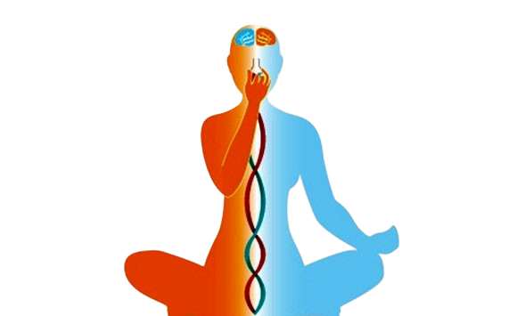
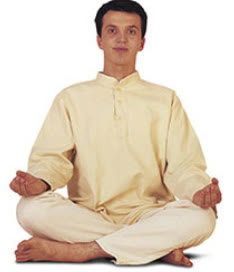
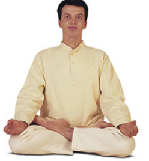
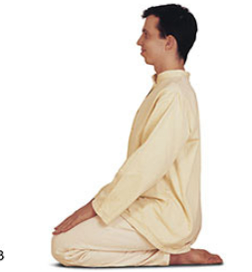

Introduction to Pranayama
Pranayama is a practice of controlled breathing that enhances mental and physical health. It involves various techniques designed to regulate and harness the breath, which is believed to influence the flow of vital energy in the body.

Breathing Techniques
Bhramari (Humming Bee Breath)
Kapalabhati (Skull Shining Breath)
Postures for Pranayama
Padmasana (Lotus Pose)
Padmasana is a seated posture that promotes stability and helps in achieving a calm state for pranayama practice.

Sukhasana (Easy Pose)
Sukhasana is a simple cross-legged pose that is ideal for beginners and helps in maintaining a relaxed and upright posture.

Vajrasana (Thunderbolt Pose)
Vajrasana is a kneeling posture that helps in digestion and is also useful for grounding during pranayama.

Frequently Asked Questions
What is Pranayama?
Pranayama is a practice of controlled breathing that is used to enhance mental and physical health by regulating and harnessing the breath. It is an integral part of yoga that focuses on the breath to improve overall well-being.
How often should I practice Pranayama?
It is generally recommended to practice pranayama daily or several times a week to experience its benefits. However, the frequency and duration can vary depending on individual needs and goals.
Can Pranayama help with stress?
Yes, pranayama can be very effective in reducing stress. Techniques such as Bhramari and Ujjayi help calm the nervous system and promote relaxation, which can significantly alleviate stress and anxiety.